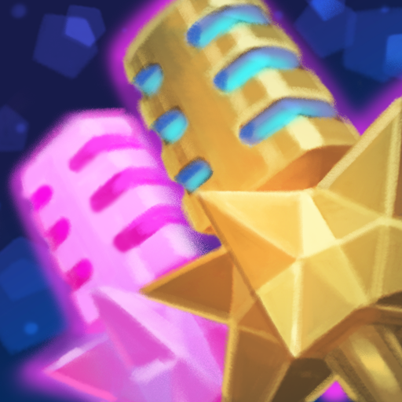

Seraphine - Abilities Rundown

Passive - Stage Presense
Every third basic ability Seraphine casts will echo, automatically casting a second time. Additionally, whenever she casts an ability nearby an ally, she will create a Note. Each Note gives her basic attacks more attack range and deal additional magic damage, consuming the Note.
Q - High Note
Seraphine projects a pure note, dealing magic damage that's increased by the target's missing health percentage.
W - Surround Sound
Seraphine surrounds her nearby allies in a song, granting herself and her allies movement speed and a shield. If Seraphine is already shielded, she can heal her nearby allies, restoring health based on how many allies are near her.
E - Beat Drop
Seraphine unleashes a heavy soundwave, dealing magic damage to enemies in a line and slowing them. Enemies that are already slowed are rooted, and already rooted enemies are stunned.
R - Encore
Seraphine takes the stage, projecting a captivating force that charms enemies and deals magic damage. Any champions struck (allies included) become part of the performance, extending the range of the ability and granting allies maximum Notes.
“Maybe the world's not ready for me. I don't mind waiting!”
- Seraphine, the Starry-Eyed Songstress
Call to Action! It's time!
Sign up for our product by clicking that button right over there!